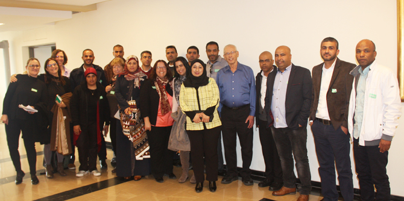
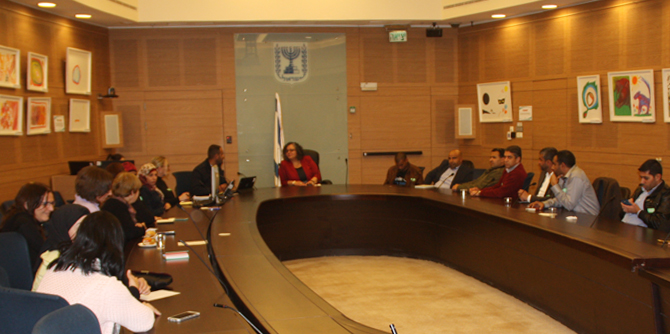

יומו הראשון של הריטריט, שהתקיים בירושלים בתחילת חודש מרס, עסק ב"השפעה מלמעלה" דרך התווית מדיניות וחקיקה. חברי הקבוצה נפגשנו עם ח"כ בני בגין ודנו עמו בתכנית ההסדרה של התיישבות הכפרים הלא מוכרים בנגב, שניסה לקדם בקדנציה הקודמת. כישלון התכנית היה מקרה למידה עבור העמיתים על המנגנונים הפועלים ומשפיעים בקבלת ההחלטות, ונתן פרספקטיבה על-אזורית על חלוקת כוח ומשאבים בפוליטיקה.
אחר כך ביקרו העמיתים בוועדת הכנסת ועמדו על דרך קבלת ההחלטות. הם נפגשו עם ח"כ עאידה טומא סלימאן – ראשת ועדת קידום מעמד האישה בכנסת, ושוחחו עמה על מעמד האישה בחברה הערבית ועל התמורות שחלו בתקופה האחרונה ביחס לנשים הן מצד המדינה והן מצד החברה. ח"כ טומא סלימאן ציינה שהאישה הערבית היא החוליה החלשה ביותר במדינה – השכלתית ותעסוקתית – ונחשבת מיעוט בתוך המיעוט.

היום השני של הריטריט הוקדש למדיניות חינוך ול"השפעה מלמטה". העמיתים למדו מודלים ייחודים של בתי ספר תיכוניים המהווים מנוף לצמיחתם של תלמידים שלא קיבלו מענה בבתי הספר הציבוריים. הם ביקרו בבית הספר לאומנויות בירושלים ופגשו את מנהל בית הספר ואת צוות המורים, שסיפרו על מודל הלימוד דרך האומנויות. במפגש אחר למדו העמיתים על המודל הייחודי של בית הספר הניסויי בירושלים ופגשו את מנהל בית הספר ואת צוות המורים. למידת המודלים של בתי הספר בירושלים עוררה דיון על מרחב האופציות החינוכיות הקיימות בנגב, בהשוואה לאזורים אחרים בארץ.

{kind=link}
{kind=link}